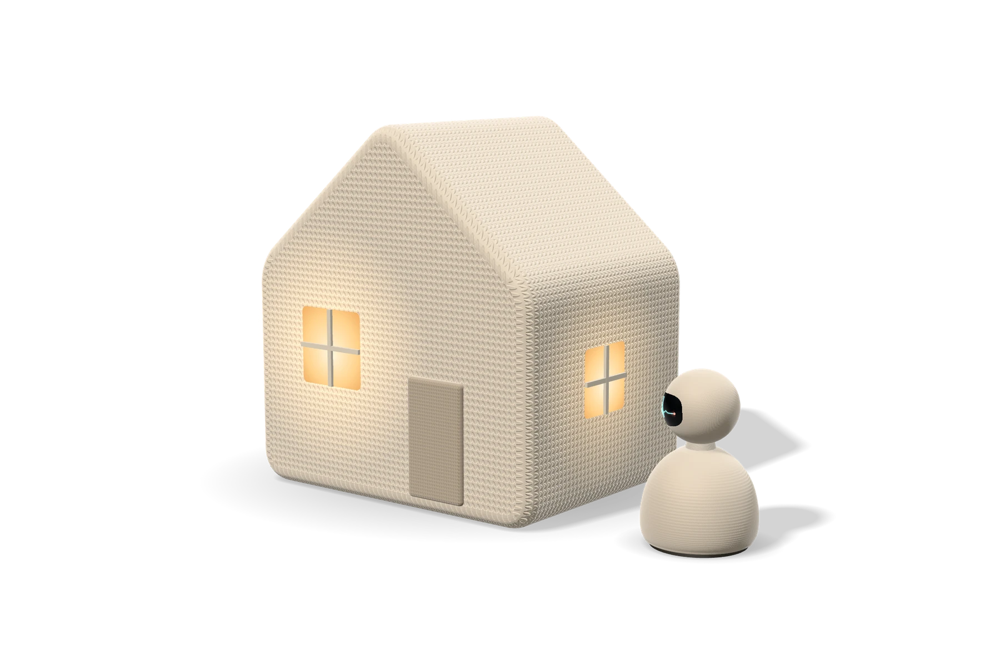

AI companions will soon live alongside us, at home, on our wrists and in our care. We're building ones that keep your data private, explain themselves, and know when to bring in a human.
38Publications
450+Citations
3Companions in development
2026Founded
Products
Three companions. One trustworthy mind.
Each companion builds on our team's research in explainable, privacy-preserving and human-centred AI. Together they are designed to share what they learn, with your permission, across the home, the wrist and the care team.
Companion robot
Guardian
A home companion that checks in, talks things through and keeps you safe.
Prototype
Concept render
Checks in
Daily conversations, reminders and gentle nudges, at a pace that suits you.
Watches out
Notices the early signs of a fall and checks before alerting anyone, so alarms stay meaningful.
Learns privately
Learning happens on the device, so personal data stays in the household.
Made for home
For older adults living independently, their families and home-care providers.
Wellbeing companion
Steady
A companion robot that reads the sensors around you, notices how you feel, and helps you and your clinician make sense of it.
Research prototype
Concept render
Sensors all around
Rings, patches, bands and home sensors track heart signals around the clock.
Talks it through
Gentle check-ins in plain language when your patterns change.
Open to challenge
Every insight shows its reasoning, and clinicians can correct it.
Clinician-connected
Shares summaries with your care team only when you choose.
Care companion
Chorus
An AI companion for the whole circle of care: older adults, families and care teams.
Research prototype

Concept render
A voice for everyone
Agents represent the priorities of each person involved in care.
Clear reasoning
Suggestions come with reasons anyone can follow and question.
Human sign-off
Nothing is adopted until the older adult and care team agree.
For care teams
Home-care agencies, long-term care providers and community health teams.
Images are concept renders. Parxyz products are in research and development. They are not medical devices, have not been approved or cleared by any regulator, and are not intended to diagnose, treat or prevent any condition.
Approach
How it works From signal to companion.
All three companions share one foundation: privacy-preserving learning on the device, and AI that explains itself and accepts correction.
Sense
Wearables, home robots and everyday conversation give the companion context about health and daily life.
Learn privately
Models run on the device and improve through federated learning, so personal data stays at home.
Explain and contest
The companion shows its reasoning, and users, carers and clinicians can question and correct it.
Hand over to people
When something matters, it brings in the right person, and a human always makes the final call.
Privacy by design
Edge-first processing and federated learning keep what leaves a home to a minimum.
People stay in charge
Companions suggest; people decide. Every output can be reviewed, challenged and overridden.
Honest by default
Companions explain what they noticed and why, building on our team's explainable-AI research.
Evidence before claims
We publish our methods in peer-reviewed venues before we promise outcomes.
Research
Research 38 publications
Our companions build on peer-reviewed work by the Parxyz team at venues including IJCAI, ACM Multimedia, Information Fusion, ACML and ICMR.
Health Intelligence Workshop (W3PHIAI) at AAAI, pp. 11-26
Team
The team building the future of AI companions.
Parxyz brings together computer science, biomedical engineering and health research. Our members are affiliated with the University of New Brunswick in Canada and Friedrich-Alexander-Universität Erlangen-Nürnberg (FAU) in Germany.
HN
Truong Thanh Hung Nguyen
Co-founder & CEO
Hung co-founded Parxyz to bring trustworthy, human-centred AI companions out of the lab and into homes and clinics. Hung is a PhD candidate in Computer Science at the University of New Brunswick's Analytics Everywhere Lab, working on explainable and contestable AI, self-evolving multi-agent systems, edge computing and biomedical engineering.
Before Parxyz, Hung earned an M.Sc. in Artificial Intelligence (minor in Biomedical Engineering) from FAU Erlangen-Nürnberg and a B.Sc. in Computer Science from Frankfurt University of Applied Sciences, both as a DAAD scholar, and worked as an AI Scientist and Business Unit Director at FPT Software.
Faculty of Computer Science, Fredericton. Edge AI, explainable AI and aging-in-place technology.
Germany
Friedrich-Alexander-Universität Erlangen-Nürnberg
Artificial intelligence and biomedical engineering.
KN
Vo Thanh Khang Nguyen
Co-founder
Khang is an AI researcher working on explainable AI and reinforcement learning. Khang's research covers how to evaluate explanation methods, explainable object detection, and trustworthy AI for medical imaging such as thyroid nodule diagnosis, and has been cited more than 300 times.
Hoang-Loc works on trustworthy and human-centred AI, multi-agent systems and biomedical image analysis. Hoang-Loc is a research assistant at the University of New Brunswick's Analytics Everywhere Lab and is completing a B.Sc. in Information Technology (Data Science) at the University of Science, VNU-HCM. Recent results include first place in the BIC-MAC Challenge at MICCAI 2026 and the Multimedia Verification Challenge at ACM ICMR 2026.